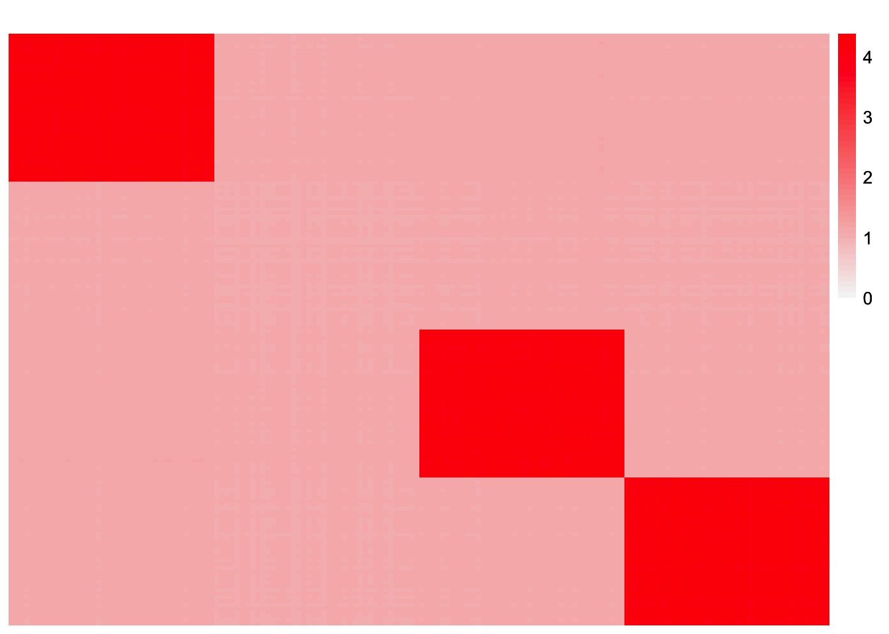
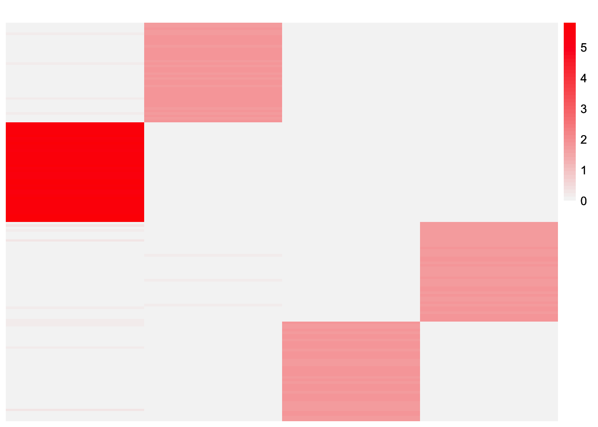
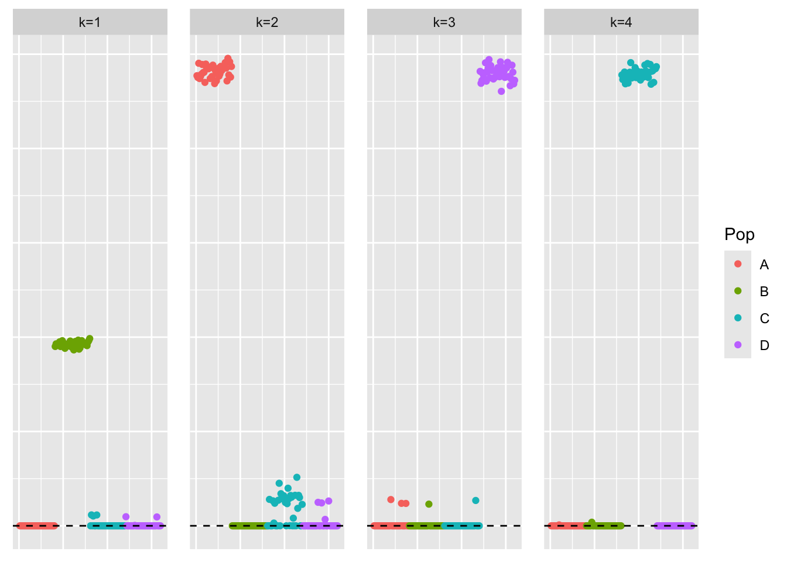

balanced_nonoverlapping_ebmfcov_diag
Annie Xie
2025-02-03
Last updated: 2025-02-15
Checks: 7 0
Knit directory: covariance_decomps_dsc/
This reproducible R Markdown analysis was created with workflowr (version 1.7.1). The Checks tab describes the reproducibility checks that were applied when the results were created. The Past versions tab lists the development history.
Great! Since the R Markdown file has been committed to the Git repository, you know the exact version of the code that produced these results.
Great job! The global environment was empty. Objects defined in the global environment can affect the analysis in your R Markdown file in unknown ways. For reproduciblity it’s best to always run the code in an empty environment.
The command set.seed(20250203) was run prior to running
the code in the R Markdown file. Setting a seed ensures that any results
that rely on randomness, e.g. subsampling or permutations, are
reproducible.
Great job! Recording the operating system, R version, and package versions is critical for reproducibility.
Nice! There were no cached chunks for this analysis, so you can be confident that you successfully produced the results during this run.
Great job! Using relative paths to the files within your workflowr project makes it easier to run your code on other machines.
Great! You are using Git for version control. Tracking code development and connecting the code version to the results is critical for reproducibility.
The results in this page were generated with repository version 31d7e8d. See the Past versions tab to see a history of the changes made to the R Markdown and HTML files.
Note that you need to be careful to ensure that all relevant files for
the analysis have been committed to Git prior to generating the results
(you can use wflow_publish or
wflow_git_commit). workflowr only checks the R Markdown
file, but you know if there are other scripts or data files that it
depends on. Below is the status of the Git repository when the results
were generated:
Ignored files:
Ignored: .DS_Store
Ignored: .Rhistory
Ignored: data/.DS_Store
Untracked files:
Untracked: analysis/tree_symnmf.Rmd
Note that any generated files, e.g. HTML, png, CSS, etc., are not included in this status report because it is ok for generated content to have uncommitted changes.
These are the previous versions of the repository in which changes were
made to the R Markdown
(analysis/balanced_nonoverlapping_ebmfcov_diag.Rmd) and
HTML (docs/balanced_nonoverlapping_ebmfcov_diag.html)
files. If you’ve configured a remote Git repository (see
?wflow_git_remote), click on the hyperlinks in the table
below to view the files as they were in that past version.
| File | Version | Author | Date | Message |
|---|---|---|---|---|
| Rmd | 31d7e8d | Annie Xie | 2025-02-15 | Update ebmfcov and flash with normal F analyses |
| html | 596a67a | Annie Xie | 2025-02-13 | Build site. |
| Rmd | a222b9e | Annie Xie | 2025-02-13 | Update analysis on ebmfcov for balanced nonoverlap |
| html | 4d53f1e | Annie Xie | 2025-02-08 | Build site. |
| Rmd | 44edc2d | Annie Xie | 2025-02-08 | Add exploration of ebmfcov in balanced nonoverlapping |
Introduction
In this analysis, we are interested in further exploring the EBMFcov method in the balanced non-overlapping setting.
library(dplyr)
library(ggplot2)
library(pheatmap)
library(flashier)source('code/visualization_functions.R')EBMFcov (without backfitting)
Visualizations of the estimate
group_nonoverlap_1 <- readRDS("data/group_nonoverlap_1.rds")
group_nonoverlap_1_ebmfcov_diag_1 <- readRDS("data/group_nonoverlap_1_ebmfcov_diag_1.rds")This is a heatmap of the true \(L\) that we hope to recover:
plot_heatmap(group_nonoverlap_1$true_L)
| Version | Author | Date |
|---|---|---|
| 4d53f1e | Annie Xie | 2025-02-08 |
This is a heatmap of \(\hat{L}\), the estimate for \(L\) from EBMFcov:
plot_heatmap(group_nonoverlap_1_ebmfcov_diag_1$est_L, brks = seq(0, max(group_nonoverlap_1_ebmfcov_diag_1$est_L), length.out = 50))
| Version | Author | Date |
|---|---|---|
| 4d53f1e | Annie Xie | 2025-02-08 |
This is a scatterplot of the entries of \(\hat{L}\):
pops_vec <- c(rep('A', 40), rep('B', 40), rep('C', 40), rep('D', 40))
plot_loadings(group_nonoverlap_1_ebmfcov_diag_1$est_L, pops_vec)
| Version | Author | Date |
|---|---|---|
| 4d53f1e | Annie Xie | 2025-02-08 |
This is a heatmap of \(\hat{F}\), the estimate for \(F\) from EBMFcov (note, I did not scale this, so the scaling is arbitrary):
plot_heatmap(group_nonoverlap_1_ebmfcov_diag_1$fit_obj$fl$F_pm, brks = seq(0, max(group_nonoverlap_1_ebmfcov_diag_1$fit_obj$fl$F_pm), length.out = 50))
This is a scatterplot of the entries of \(\hat{L}\):
pops_vec <- c(rep('A', 40), rep('B', 40), rep('C', 40), rep('D', 40))
plot_loadings(group_nonoverlap_1_ebmfcov_diag_1$fit_obj$fl$F_pm, pops_vec)
| Version | Author | Date |
|---|---|---|
| 4d53f1e | Annie Xie | 2025-02-08 |
group_nonoverlap_1_ebmfcov_diag_1$fit_obj$fl$elbo[1] -41238.91Visualizations related to fit
This is the true Gram matrix, \(\frac{1}{p}XX'\):
plot_heatmap(group_nonoverlap_1$data$YYt, colors = c('blue','gray96', 'red'), brks = seq(-max(abs(group_nonoverlap_1$data$YYt)), max(abs(group_nonoverlap_1$data$YYt)), length.out = 50))This is a heatmap of the estimate of the Gram matrix, \(\hat{L}\hat{L}'\):
plot_heatmap(group_nonoverlap_1_ebmfcov_diag_1$est_LLt, brks = seq(0, max(group_nonoverlap_1_ebmfcov_diag_1$est_LLt), length.out = 50))
This is a scatter plot of the fitted values vs observed values:
ggplot(data = NULL, aes(x = c(group_nonoverlap_1$data$YYt), y = c(group_nonoverlap_1_ebmfcov_diag_1$est_LLt))) + geom_point() + ylim(-1, 6) + xlim(-1,6) + xlab('Observed Values') + ylab('Fitted Values') + geom_abline(slope = 1, intercept = 0, color = 'red')The model that we fit is \(XX' \approx LL' + D\), so let’s focus on the off-diagonal elements for now.
diag_idx <- seq(1, prod(dim(group_nonoverlap_1$data$YYt)), length.out = ncol(group_nonoverlap_1$data$YYt))
off_diag_idx <- setdiff(c(1:prod(dim(group_nonoverlap_1$data$YYt))), diag_idx) ggplot(data = NULL, aes(x = c(group_nonoverlap_1$data$YYt)[off_diag_idx], y = c(group_nonoverlap_1_ebmfcov_diag_1$est_LLt)[off_diag_idx])) + geom_point() + ylim(-1, 6) + xlim(-1,6) + xlab('Observed Values') + ylab('Fitted Values') + geom_abline(slope = 1, intercept = 0, color = 'red')
| Version | Author | Date |
|---|---|---|
| 4d53f1e | Annie Xie | 2025-02-08 |
Observations
Based off the visualizations, it seems like this method wants to add an intercept term. This is not totally surprising since the loadings and factors are added in a greedy way, and for this scenario, an intercept factor provides an equally good rank one fit as a factor identifying one group. However, looking at the heatmap of \(LL'\), this looks like a bad estimate for the Gram matrix. (Side note: it’s possible that if we add another factor, this fifth factor would pick up the last group.)
We wonder if backfitting would fix this issue because if you took out the effect of the three groups, then the intercept factor would be a bad fit to the residualized data matrix. We will test this in the next section.
Adding backfitting
Now, we add a backfitting step whenever we fit the flash fits.
cov_fit_backfit <- function(covmat, ebnm_fn = ebnm::ebnm_point_laplace, Kmax = 1000, verbose.lvl = 0, backfit_iter = 500, backfit_tol = NULL, cov_fit_init = NULL) {
if (is.null(cov_fit_init)){
fl <- flash_init(covmat, var_type = 0) %>%
flash_set_verbose(verbose.lvl) %>%
flash_greedy(ebnm_fn = ebnm_fn, Kmax = Kmax) %>%
flash_backfit(maxiter = backfit_iter, tol = backfit_tol)
}
else{
fl <- flash_init(covmat, var_type = 0) %>%
flash_factors_init(cov_fit_init)
}
s2 <- max(0, mean(diag(covmat) - diag(fitted(fl))))
s2_diff <- Inf
while(s2 > 0 && abs(s2_diff - 1) > 1e-4) {
covmat_minuss2 <- covmat - diag(rep(s2, ncol(covmat)))
fl <- flash_init(covmat_minuss2, var_type = 0) %>%
flash_set_verbose(verbose.lvl) %>%
flash_greedy(ebnm_fn = ebnm_fn, Kmax = Kmax) %>%
flash_backfit(maxiter = backfit_iter, tol = backfit_tol)
old_s2 <- s2
s2 <- max(0, mean(diag(covmat) - diag(fitted(fl))))
s2_diff <- s2 / old_s2
}
return(list(fl=fl, s2 = s2))
}cov_fit_backfit_fit <- cov_fit_backfit(group_nonoverlap_1$data$YYt, ebnm_fn = ebnm::ebnm_generalized_binary,
Kmax = group_nonoverlap_1$data$K, backfit_iter = 500, backfit_tol = 10^(-16))Visualization of Estimate
This is a heatmap of \(\hat{L}_{backfit}\), the estimate for \(L\) from EBMFcov with backfitting (this is not scaled, so the scaling is arbitrary):
plot_heatmap(cov_fit_backfit_fit$fl$L_pm, brks = seq(0, max(cov_fit_backfit_fit$fl$L_pm), length.out = 50))This is a scatterplot of the entries of \(\hat{L}_{backfit}\) (this is not scaled, so the scaling is arbitrary):
plot_loadings(cov_fit_backfit_fit$fl$L_pm, pops_vec)
| Version | Author | Date |
|---|---|---|
| 4d53f1e | Annie Xie | 2025-02-08 |
This is a heatmap of \(\hat{F}_{backfit}\), the estimate for \(L\) from EBMFcov with backfitting (this is not scaled, so the scaling is arbitrary):
plot_heatmap(cov_fit_backfit_fit$fl$F_pm, brks = seq(0, max(cov_fit_backfit_fit$fl$F_pm), length.out = 50))
This is a scatterplot of the entries of \(\hat{F}_{backfit}\) (this is not scaled, so the scaling is arbitrary):
plot_loadings(cov_fit_backfit_fit$fl$F_pm, pops_vec)
This is the elbo of the flash fit:
cov_fit_backfit_fit$fl$elbo[1] 20929.4Observations
We see that with the backfit, the estimate looks closer to what we want. This suggests that the issue with the original estimate is a computational issue (i.e. the objective function is not actively favoring the first estimate) that can be mitigated with backfitting. However, the recovered group effect is not as strong as the other group effects. I tried backfitting with larger numbers of iterations and backfitting with a decreased tolerance to see if the estimate improves (i.e. testing does the backfit have slow convergence?), but it doesn’t seem to improve the estimate. After meeting with Matthew, he suggested I look at scaling. (The scaling issues also become more obvious when we also look at the estimate for \(F\)). So in the next section, I try re-scaling \(L\) using the ldf function from flashier.
Rescaling
It looks like there is an issue with scaling. So we try rescaling the estimates with the ldf function from flashier.
scaled_cov_fit_backfit_fit <- ldf(cov_fit_backfit_fit$fl)
scaled_cov_fit_backfit_L <- scaled_cov_fit_backfit_fit$L %*% diag(sqrt(scaled_cov_fit_backfit_fit$D))
scaled_cov_fit_backfit_F <- scaled_cov_fit_backfit_fit$F %*% diag(sqrt(scaled_cov_fit_backfit_fit$D))This is a heatmap of \(\hat{L}_{backfit-scaled}\), the estimate for \(L\) from EBMFcov with backfitting:
plot_heatmap(scaled_cov_fit_backfit_L, brks = seq(0, max(scaled_cov_fit_backfit_L), length.out = 50))
This is a scatterplot of the entries of \(\hat{L}_{backfit-scaled}\):
plot_loadings(scaled_cov_fit_backfit_L, pops_vec)This is a heatmap of \(\hat{F}_{backfit-scaled}\), the estimate for \(L\) from EBMFcov with backfitting:
plot_heatmap(scaled_cov_fit_backfit_F, brks = seq(0, max(scaled_cov_fit_backfit_L), length.out = 50))This is a scatterplot of the entries of \(\hat{F}_{backfit-scaled}\):
plot_loadings(scaled_cov_fit_backfit_F, pops_vec)This is a heatmap of \(\hat{L}_{backfit-scaled} \hat{L}_{backfit-scaled}'\):
scaled_cov_fit_backfit_fit_estLLt <- tcrossprod(scaled_cov_fit_backfit_L)plot_heatmap(scaled_cov_fit_backfit_fit_estLLt, brks = seq(0, max(scaled_cov_fit_backfit_fit_estLLt), length.out = 50))This is a scatter plot of the fitted values vs observed values:
ggplot(data = NULL, aes(x = c(group_nonoverlap_1$data$YYt), y = c(scaled_cov_fit_backfit_fit_estLLt))) + geom_point() + ylim(-1, 7) + xlim(-1,7) + xlab('Observed Values') + ylab('Fitted Values') + geom_abline(slope = 1, intercept = 0, color = 'red')This is a scatter plot of the off-diagonal entries of the fitted values vs those of the observed values:
ggplot(data = NULL, aes(x = c(group_nonoverlap_1$data$YYt)[off_diag_idx], y = c(scaled_cov_fit_backfit_fit_estLLt)[off_diag_idx])) + geom_point() + ylim(-1, 7) + xlim(-1,7) + xlab('Observed Values') + ylab('Fitted Values') + geom_abline(slope = 1, intercept = 0, color = 'red')Observations
After rescaling, we see that the estimate for the covariance matrix is much better. All the group effects have the same scale, as expected. In addition, the fitted values now closely match the observed values. However, one strange feature of this estimate is there are a handful of zero loadings which become non-zero during the backfitting. My hypothesis is that as the baseline values in the first value go to zero, some of the zero values in the other loadings increase. Another thing I want to try is initializing the fit at the true values; I want to see if that estimate also has these small non-zero loadings.
Progression of the backfitting
Backfit after 3 iterations
cov_fit_backfit_iter3_fit <- cov_fit_backfit(group_nonoverlap_1$data$YYt, ebnm_fn = ebnm::ebnm_generalized_binary,
Kmax = group_nonoverlap_1$data$K, backfit_iter = 3)Warning in report.maxiter.reached(verbose.lvl): Maximum number of iterations
reached.
Warning in report.maxiter.reached(verbose.lvl): Maximum number of iterations
reached.
Warning in report.maxiter.reached(verbose.lvl): Maximum number of iterations
reached.
Warning in report.maxiter.reached(verbose.lvl): Maximum number of iterations
reached.This is a scatterplot of the entries of \(\hat{L}_{backfit}\) (this is not scaled, so the scaling is arbitrary):
plot_loadings(cov_fit_backfit_iter3_fit$fl$L_pm, pops_vec)This is a scatterplot of the entries of \(\hat{F}_{backfit}\) (this is not scaled, so the scaling is arbitrary):
plot_loadings(cov_fit_backfit_iter3_fit$fl$F_pm, pops_vec)This is the elbo of the flash fit:
cov_fit_backfit_iter3_fit$fl$elbo[1] -731.2368Backfit after 4 iterations
cov_fit_backfit_iter4_fit <- cov_fit_backfit(group_nonoverlap_1$data$YYt, ebnm_fn = ebnm::ebnm_generalized_binary,
Kmax = group_nonoverlap_1$data$K, backfit_iter = 4)Warning in report.maxiter.reached(verbose.lvl): Maximum number of iterations
reached.
Warning in report.maxiter.reached(verbose.lvl): Maximum number of iterations
reached.
Warning in report.maxiter.reached(verbose.lvl): Maximum number of iterations
reached.
Warning in report.maxiter.reached(verbose.lvl): Maximum number of iterations
reached.This is a scatterplot of the entries of \(\hat{L}_{backfit}\) (this is not scaled, so the scaling is arbitrary):
plot_loadings(cov_fit_backfit_iter4_fit$fl$L_pm, pops_vec)
This is a scatterplot of the entries of \(\hat{F}_{backfit}\) (this is not scaled, so the scaling is arbitrary):
plot_loadings(cov_fit_backfit_iter4_fit$fl$F_pm, pops_vec)This is the elbo of the flash fit:
cov_fit_backfit_iter4_fit$fl$elbo[1] 19173.48Initialize at true values
We run EBMFcov initialized with the true loadings matrix:
cov_fit_true_init_fit <- cov_fit_backfit(group_nonoverlap_1$data$YYt, ebnm_fn = ebnm::ebnm_generalized_binary,
Kmax = group_nonoverlap_1$data$K, backfit_iter = 500, backfit_tol = 10^(-16), cov_fit_init = list(group_nonoverlap_1$data$LL, group_nonoverlap_1$data$LL))We rescale the estimates such that \(XX' = LL'\) (the scaling from EBMFcov is arbitrary):
scaled_cov_fit_true_init_fit <- ldf(cov_fit_true_init_fit$fl)
scaled_cov_fit_true_init_L <- scaled_cov_fit_true_init_fit$L %*% diag(sqrt(scaled_cov_fit_true_init_fit$D))
scaled_cov_fit_true_init_F <- scaled_cov_fit_true_init_fit$F %*% diag(sqrt(scaled_cov_fit_true_init_fit$D))Visualization of Estimate
This is a heatmap of \(\hat{L}_{true-init}\), the estimate for \(L\) from EBMFcov intialized with the true values:
plot_heatmap(scaled_cov_fit_true_init_L, brks = seq(0, max(scaled_cov_fit_true_init_L), length.out = 50))
This is a scatterplot of the entries of \(\hat{L}_{true-init}\) (this is not scaled, so the scaling is arbitrary):
plot_loadings(scaled_cov_fit_true_init_L, pops_vec)This is a heatmap of \(\hat{F}_{backfit}\), the estimate for \(L\) from EBMFcov with backfitting (this is not scaled, so the scaling is arbitrary):
plot_heatmap(scaled_cov_fit_true_init_F, brks = seq(0, max(scaled_cov_fit_true_init_F), length.out = 50))
This is a scatterplot of the entries of \(\hat{F}_{backfit}\) (this is not scaled, so the scaling is arbitrary):
plot_loadings(scaled_cov_fit_true_init_F, pops_vec)This is the elbo of the flash fit:
cov_fit_true_init_fit$fl$elbo[1] 20929.4Observations
The estimate from EBMFcov initialized with the true values also has these small non-zero values. This suggests that the objective function favors an estimate with these small loading values rather than zero values. I’m not sure if this is related to the data?
Try more factors
Another question of interest is whether adding a fifth factor would add the final group effect. Furthermore, if we do backfit, then it would make sense for the first factor to zero out (since it is not necessary to explain the fit anymore). We test this out in this section.
We run EBMFcov with Kmax = 5:
cov_fit_backfit_K5_fit <- cov_fit_backfit(group_nonoverlap_1$data$YYt, ebnm_fn = ebnm::ebnm_generalized_binary,
Kmax = 5, backfit_iter = 500)Warning in scale.EF(EF): Fitting stopped after the initialization function
failed to find a non-zero factor.
Warning in scale.EF(EF): Fitting stopped after the initialization function
failed to find a non-zero factor.
Warning in scale.EF(EF): Fitting stopped after the initialization function
failed to find a non-zero factor.
Warning in scale.EF(EF): Fitting stopped after the initialization function
failed to find a non-zero factor.This is a scatterplot of the entries of \(\hat{L}_{backfit-K5}\) (this is not scaled, so the scaling is arbitrary):
plot_loadings(cov_fit_backfit_K5_fit$fl$L_pm, pops_vec)This is a scatterplot of the entries of \(\hat{F}_{backfit-K5}\) (this is not scaled, so the scaling is arbitrary):
plot_loadings(cov_fit_backfit_K5_fit$fl$F_pm, pops_vec)This is the elbo of the flash fit:
cov_fit_backfit_K5_fit$fl$elbo[1] 20929.4Observations
The estimate from fitting EBMFcov with a higher Kmax still has four factors. During the greedy algorithm, when the fifth factor is added, flash states the “Factor doesn’t significantly increase objective and won’t be added”. I think the structure of the Gram matrix strongly supports the matrix having rank four, so perhaps flash doesn’t want to add another factor, creating an over-complete basis.
sessionInfo()R version 4.3.2 (2023-10-31)
Platform: aarch64-apple-darwin20 (64-bit)
Running under: macOS Sonoma 14.4.1
Matrix products: default
BLAS: /Library/Frameworks/R.framework/Versions/4.3-arm64/Resources/lib/libRblas.0.dylib
LAPACK: /Library/Frameworks/R.framework/Versions/4.3-arm64/Resources/lib/libRlapack.dylib; LAPACK version 3.11.0
locale:
[1] en_US.UTF-8/en_US.UTF-8/en_US.UTF-8/C/en_US.UTF-8/en_US.UTF-8
time zone: America/Chicago
tzcode source: internal
attached base packages:
[1] stats graphics grDevices utils datasets methods base
other attached packages:
[1] flashier_1.0.53 ebnm_1.1-34 pheatmap_1.0.12 ggplot2_3.5.1
[5] dplyr_1.1.4 workflowr_1.7.1
loaded via a namespace (and not attached):
[1] tidyselect_1.2.1 viridisLite_0.4.2 farver_2.1.2
[4] fastmap_1.2.0 lazyeval_0.2.2 promises_1.3.0
[7] digest_0.6.37 lifecycle_1.0.4 processx_3.8.4
[10] invgamma_1.1 magrittr_2.0.3 compiler_4.3.2
[13] rlang_1.1.4 sass_0.4.9 progress_1.2.3
[16] tools_4.3.2 utf8_1.2.4 yaml_2.3.10
[19] data.table_1.16.0 knitr_1.48 labeling_0.4.3
[22] prettyunits_1.2.0 htmlwidgets_1.6.4 scatterplot3d_0.3-44
[25] RColorBrewer_1.1-3 Rtsne_0.17 withr_3.0.1
[28] purrr_1.0.2 grid_4.3.2 fansi_1.0.6
[31] git2r_0.33.0 fastTopics_0.6-192 colorspace_2.1-1
[34] scales_1.3.0 gtools_3.9.5 cli_3.6.3
[37] rmarkdown_2.28 crayon_1.5.3 generics_0.1.3
[40] RcppParallel_5.1.9 rstudioapi_0.16.0 httr_1.4.7
[43] pbapply_1.7-2 cachem_1.1.0 stringr_1.5.1
[46] splines_4.3.2 parallel_4.3.2 softImpute_1.4-1
[49] vctrs_0.6.5 Matrix_1.6-5 jsonlite_1.8.9
[52] callr_3.7.6 hms_1.1.3 mixsqp_0.3-54
[55] ggrepel_0.9.6 irlba_2.3.5.1 horseshoe_0.2.0
[58] trust_0.1-8 plotly_4.10.4 jquerylib_0.1.4
[61] tidyr_1.3.1 glue_1.8.0 ps_1.7.7
[64] uwot_0.1.16 cowplot_1.1.3 stringi_1.8.4
[67] Polychrome_1.5.1 gtable_0.3.5 later_1.3.2
[70] quadprog_1.5-8 munsell_0.5.1 tibble_3.2.1
[73] pillar_1.9.0 htmltools_0.5.8.1 truncnorm_1.0-9
[76] R6_2.5.1 rprojroot_2.0.4 evaluate_1.0.0
[79] lattice_0.22-6 highr_0.11 RhpcBLASctl_0.23-42
[82] SQUAREM_2021.1 ashr_2.2-66 httpuv_1.6.15
[85] bslib_0.8.0 Rcpp_1.0.13 deconvolveR_1.2-1
[88] whisker_0.4.1 xfun_0.48 fs_1.6.4
[91] getPass_0.2-4 pkgconfig_2.0.3